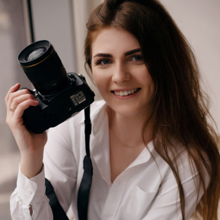

Hallo!
Ich heiße Anastasiia und lade Sie ein, gemeinsam unvergessliche Erinnerungen durch meine Kamera zu schaffen

Jede Person hat eine Geschichte, und ich sehe es als meine Aufgabe, diese Geschichte durch meine Kamera zu erzählen. Bei mir geht es nicht nur darum, schöne Fotos zu machen, sondern um das Einfangen von Momenten, die emotionale Tiefe und persönliche Authentizität widerspiegeln.
Ob Sie sich für ein elegantes Frauenportrait, eine romantische Love-Story oder ein charmantes Familienfoto entscheiden – jede Session wird individuell auf Ihre Wünsche und Bedürfnisse abgestimmt.
In entspannter und professioneller Atmosphäre begleite ich Sie durch den gesamten Prozess: Von der Auswahl der passenden Outfits bis hin zur perfekten Pose. Gemeinsam schaffen wir Bilder, die nicht nur ästhetisch ansprechend sind, sondern auch Ihre Persönlichkeit und Ihre besonderen Momente authentisch widerspiegeln.
Lassen Sie uns gemeinsam wunderschöne Erinnerungen schaffen, die Sie immer wieder gerne betrachten werden!